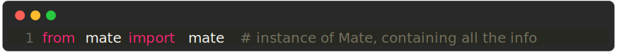
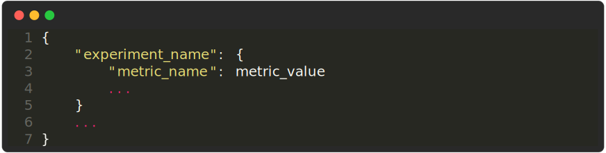

Mate Runtime
Class containing all the information about the current run. You usually want to import it into your experiment like this:

You can use this to: - Get the current CLI command - Save the run to a JSON file - Get the current save directory - Get the current checkpoint path
Example

result
Save the results of the current run.
Example

This is not meant to replace a proper logging framework, but rather to
provide a simple way to save the results of an experiment. This is
especially useful when you want to compare multiple experiments (see
mate.results()).
Pytorch Lightning Example
If you want, with pytorch lightning, you can directly pass the
logged_metrics dictionary to this function.

results
Get the results of all experiments. in the form of a dictionary. The dictionary is structured as follows:
